Fun with Filters:
Convolutions From Scratch!
Zero Padding, Mode: Same
9x9 Box Filter
Finite Difference Filter: Dx
Finite Difference Filter: Dy


4 For Loop Runtime: 1min 38s
2 For Loop Runtime: 1.05s
Scipy Runtime: 1.15s
4 For Loop Runtime: 6.22s
2 For Loop Runtime: 99.4ms
Scipy Runtime: 45.8ms
4 For Loop Runtime: 8.15s
2 For Loop Runtime: 59.4ms
Scipy Runtime: 80.1ms
Zero Padding, Mode: Full
9x9 Box Filter
Finite Difference Filter: Dx
Finite Difference Filter: Dy


4 For Loop Runtime: 1min 33s
2 For Loop Runtime: 1.1s
Scipy Runtime: 928ms
4 For Loop Runtime: 6.17s
2 For Loop Runtime: 130ms
Scipy Runtime: 70.2ms
4 For Loop Runtime: 8.08s
2 For Loop Runtime: 63.8ms
Scipy Runtime: 73.9ms
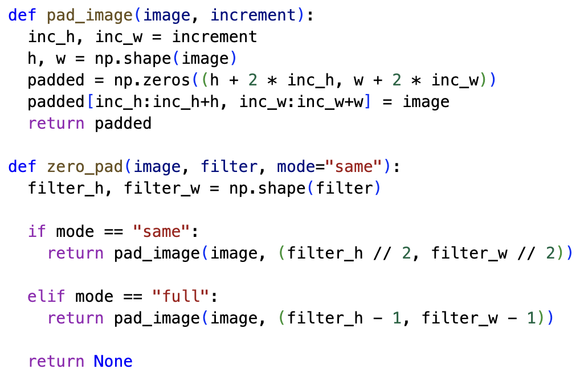
My implementation includes zero padding of a few modes: same & full. Same pads the input image just enough to leaves the output image the same dimensions as the original input image. It is still zero padding, so the there exist thin dark borders around the image due to contribution of 0 weights. Full pads the image to make the output image bigger after convolution to reveal the effects of every kernel filter interaction with the image. This along with zero padding made the dark boundaries thicker.
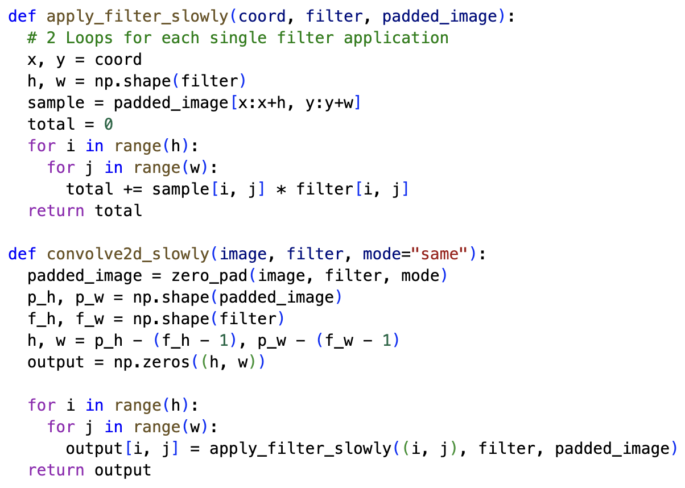
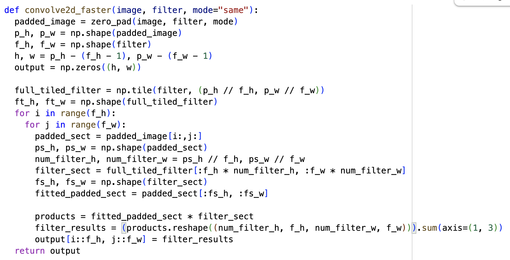
My 4 for loop implementation iterated through every pixel of the output image. For each output pixel, it calculated its value by iterating through the filter operation pixel by pixel. Runtime for it was long, reaching nearly 2 minutes for applying the box filter. My 2 for loop implementation unrolled the pixel by pixel filter operation, doing the calculations for many output pixels at once instead of one at a time. The only iterating it needed to do was for the size of the kernel itself. Runtime for it was quick, making the box filter application around 1 second. In comparison to Scipy's convolution function, my 4 for loop implementation is miles behind in runtime but my 2 for loop implementation is very close, nearing the same runtime, and a few times has a smaller runtime like with the application of the Dy finite difference filter.
Finite Difference Operator
Images of a Cameraman
Original
Partial Derivative in X
Partial Derivative in Y
Normalized Gradient Magnitude


Binarized Edge Image
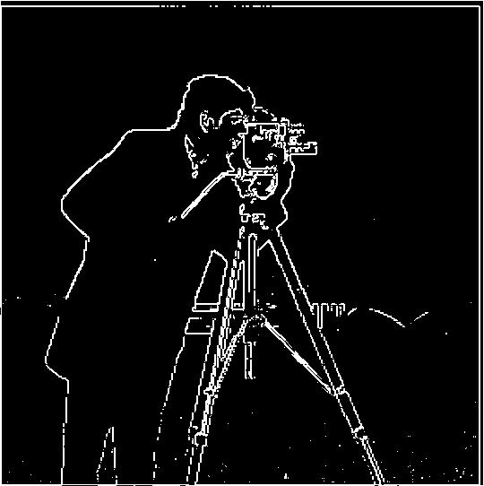
Threshold: Gradient Magnitude < 0.2828
My choice of threshold 0.2828 was motivated by my desire to balance noise and edges I thought were valuable. The biggest source of noise in the edge image originated in the grass, leaving lots of noise scattered along the bottom of the image. I slowly incremented up the threshold to gauge the reduction of noise. Past this threshold, the details of the man and the camera's edges were getting reduced. While some noise is present, I believe its amount is low enough that it did not justify further reducing the details of the man and camera.
Derivative of Gaussian (DoG) Filter
Applied 5x5 Gaussian Filter First Then Partial Derivatives
Smooth Gaussian Filtered
Partial Derivative in X
of Smoothed Image
Partial Derivative in Y
of Smoothed Image
Normalized Gradient Magnitude
of Smoothed Image
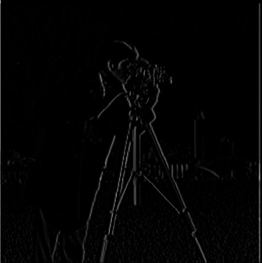
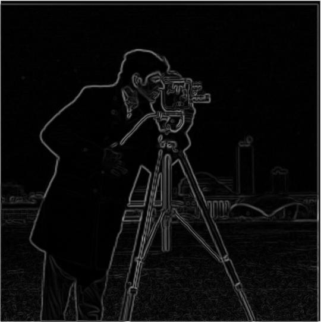
Binarized Edge Image
of Smoothed Image
Threshold: Gradient Magnitude < 0.2828
There are a few differences to note. Compared to the white edges of the binarized unsmoothed gradient magnitude image, the white edges are far more smooth with less jaggness to them. The leftover noise on the bottom visible in the unsmoothed version is also no longer there any more.
Applied Partial Derivatives of Gaussian Filter (DoG)
Partial Derivative in X
of Gaussian Filter (DoG x)
Partial Derivative in Y
of Gaussian Filter (DoG y)
Normalized Gradient Magnitude
from DoGs
Binarized Edge Image
from DoGs' Gradient Magnitude
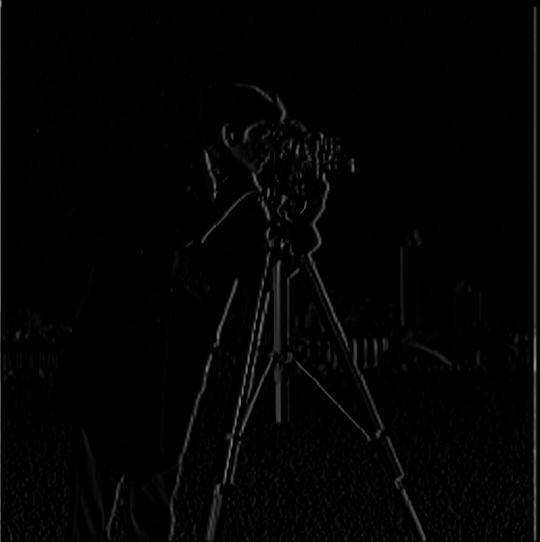
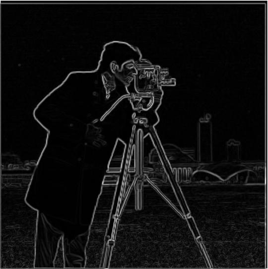
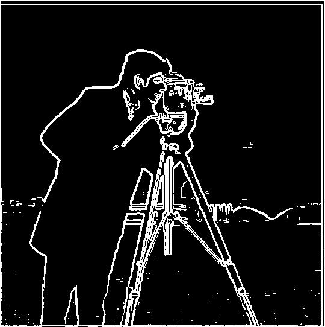
Threshold: gm < 0.2828
Mathematically, applying the finite difference convolutions on gaussian filters before applying the results convolution over the image should be equivalent to previous process of smoothing the image first before finding the partial derivatives. You can see it. The results of applying DoGs is near identical to the results of the smoothing process. The slight specks that appear are just a result of floating-point rounding errors, but asides from that, they are near identical.
Fun with Frequencies:
Image "Sharpening"
Taj Mahal
Original
Blurred
High Frequencies
(Amplified for Visibility)
Resharpened

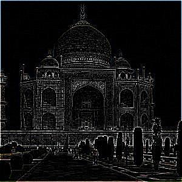
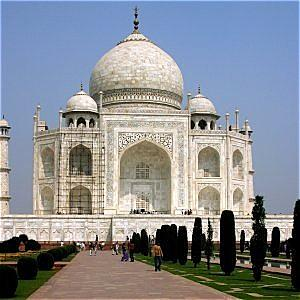
Sharpened, a = 1
Sharpened, a = 2
Sharpened, a = 5
Sharpened, a = 10

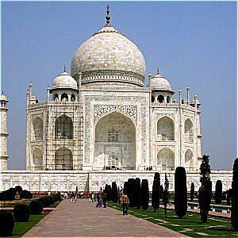
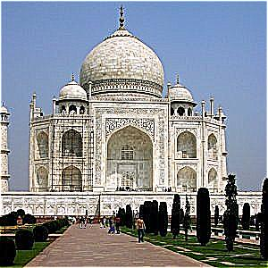
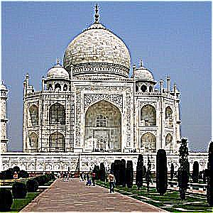
When an image is blurred via a Gaussian filter, the image is going through a filter
such that only low frequencies are permitted while high frequencies are attentuated.
An unsharp mask filter takes advantage of this. Since images after a blur filter
are of low frequencies, taking the difference of it from the original would leave the
high frequencies. These high freqeuncies are then added back to the original, sometimes
scaled up, further amplifying the high frequencies in the original, making it "sharper".
Sharpening is not always good, as doing it in an extreme degree could sharpen noise.
When resharpening an image that went through a blur filter, it creates an image that closely
resembles the original.
Mama Duck
Original
Blurred
High Frequencies
(Amplified for Visibility)
Resharpened
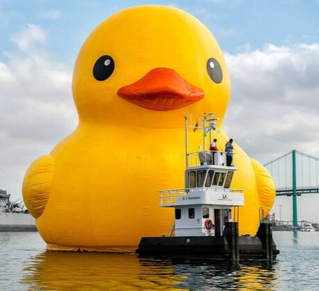
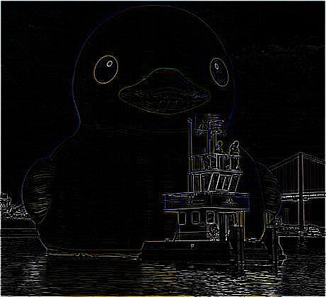

Sharpened, a = 1
Sharpened, a = 2
Sharpened, a = 5
Sharpened, a = 10
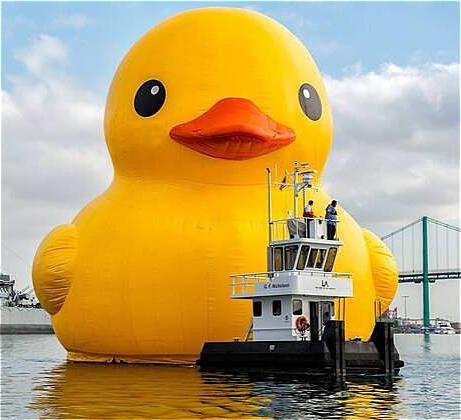
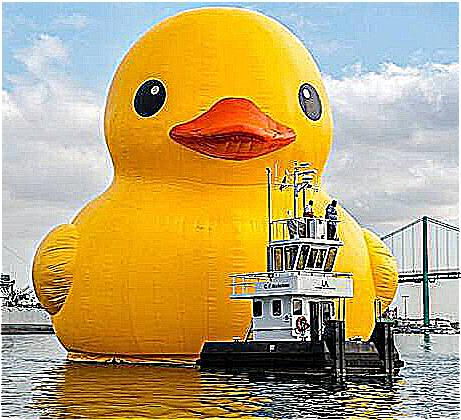
Hybrid Images
Original: Derek
Original: Nutmeg
Hybrid: Derek + Nutmeg
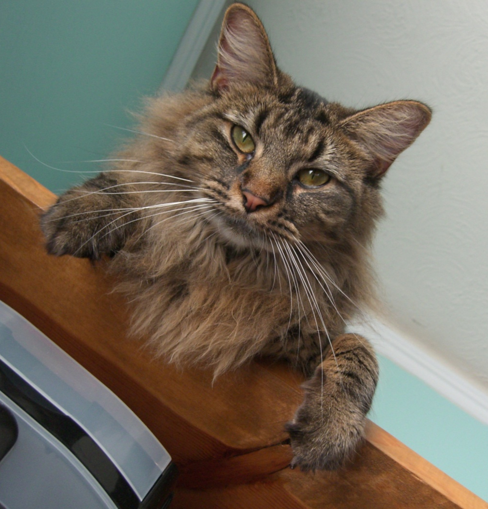
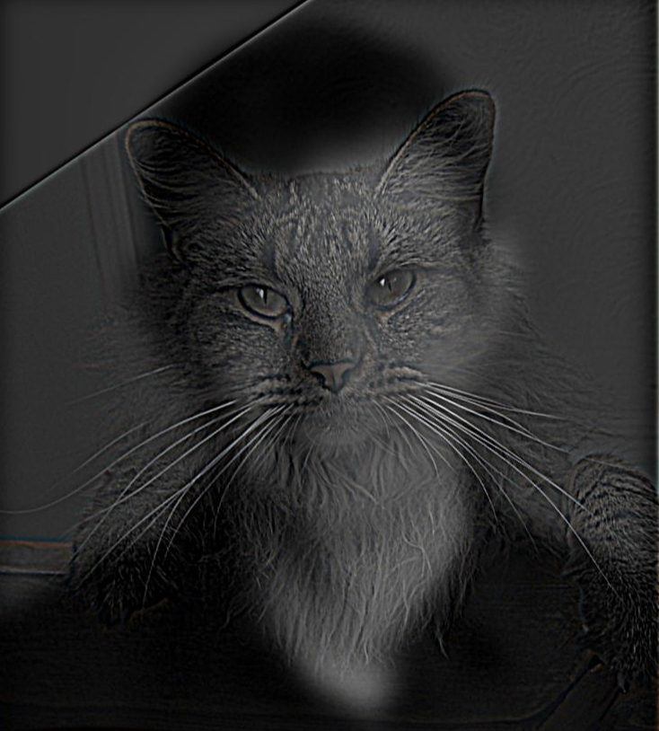
Low Pass Filter:
Size: 85 x 85
Cutoff Value: 14
High Pass Filter:
Size: 19 x 19
Cutoff Value: 3
Low Freq. Weight: 0.5
High Freq. Weight: 1.5
Original: Zuzu
Original:
1000 Yard Stare
Hybrid: Zuzu +
1000 Yard Stare
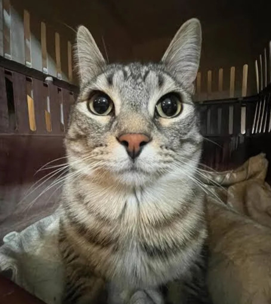
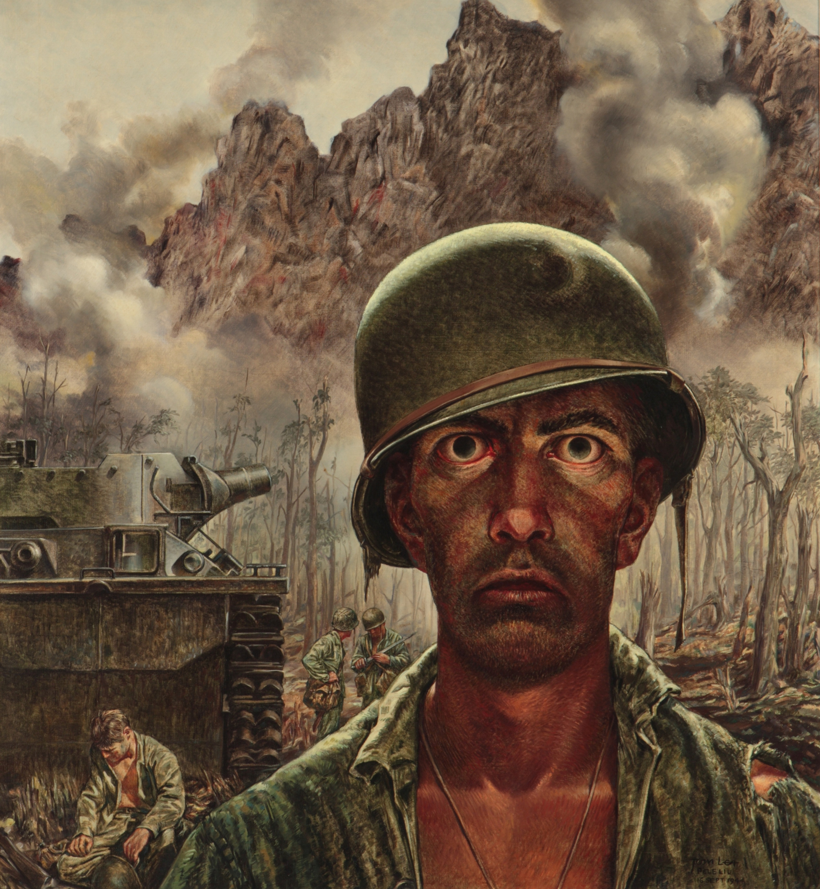
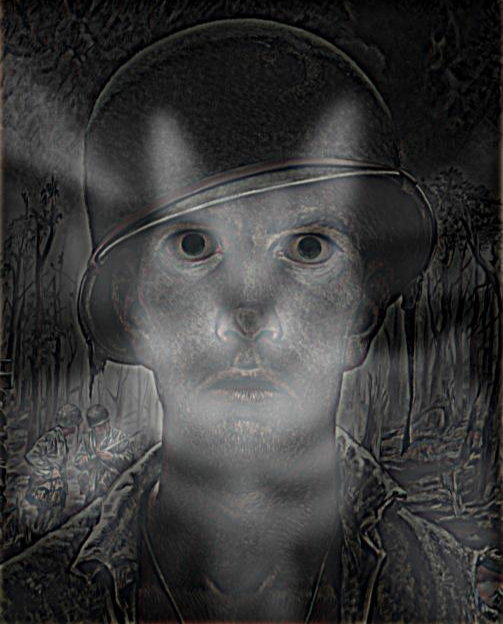
Low Pass Filter:
Size: 49 x 49
Cutoff Value: 8
High Pass Filter:
Size: 19 x 19
Cutoff Value: 3
Low Freq. Weight: 0.8
High Freq. Weight: 1.2
The Process:
Original: Thinking Dude
Original: Shrek
Aligned Thinking Dude
Aligned Shrek
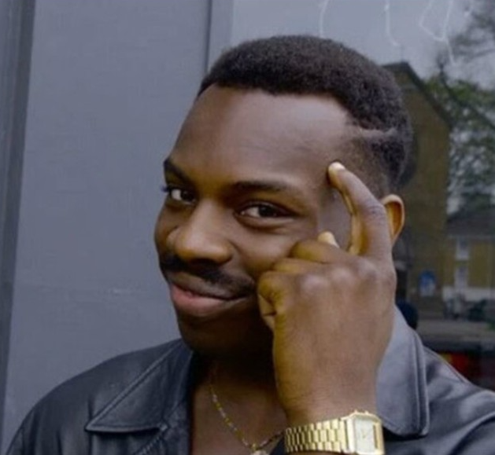
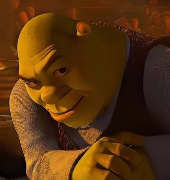
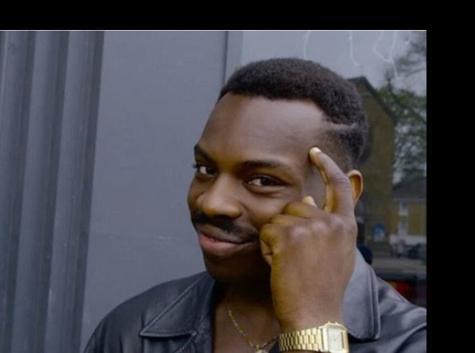
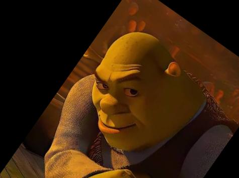
When attempting to create hybrid images, it is best that the images are aligned for a better viewing experience. To do so, I chose specific points from each image that I wanted to be 1 to 1 with each other and shifted, rotated, and resized the images to make that happen. In my case, I chose to align the eyes.
Low Pass Filtered
High Pass Filtered
Hybrid: Dude + Shrek
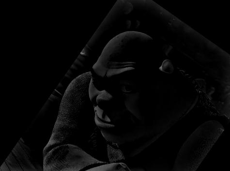
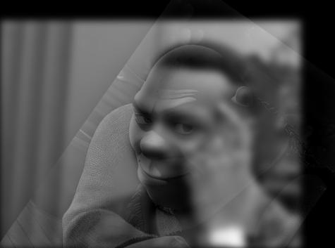
Low Pass Filter:
Size: 31 x 31
Cutoff Value: 5
High Pass Filter:
Size: 91 x 91
Cutoff Value: 15
Low Freq. Weight: 1.1
High Freq. Weight: 0.35
Using Gaussian Filters, I can create a low pass filter that blurs an image, leaving low frequencies, and a high pass filter that retains the higher frequencies only. Each filter has there own cut-off frequencies. The higher the cut-off frequencies, the more gets filtered out from either. The lower the cut-off frequencies, the more the finer details get retained. For all these examples, the cut-off frequencies were decided via trial and error to find the right balance of the insensity of each image. I wanted to ensure that neither images overpowered each other, making it difficult to gauge what could be seen.
Log Magnitude of the Fourier Transformed:
Input 1: Dude
Input 2: Shrek
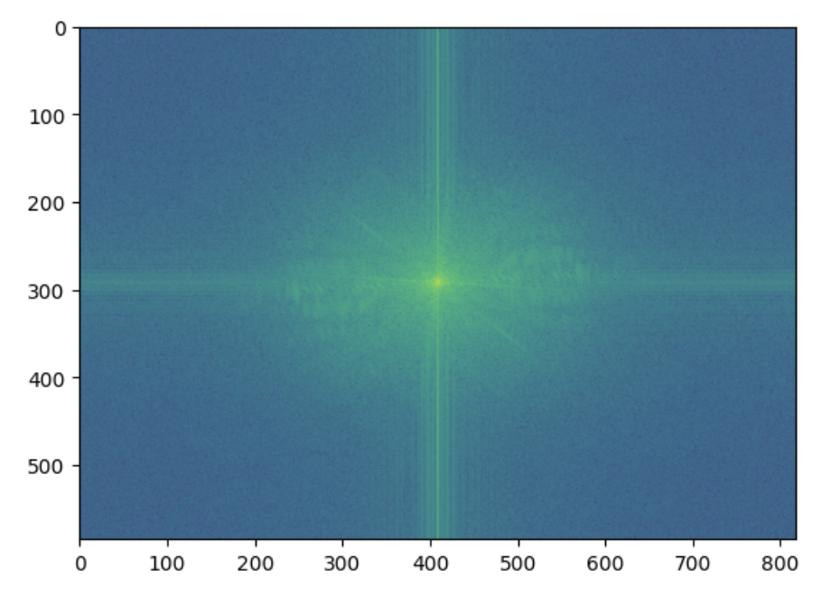
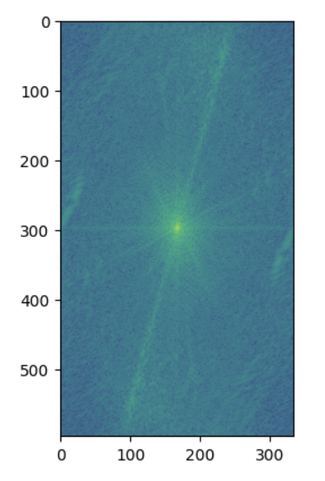
Aligned Input 1
Aligned Input 2
Hybrid: Dude + Shrek
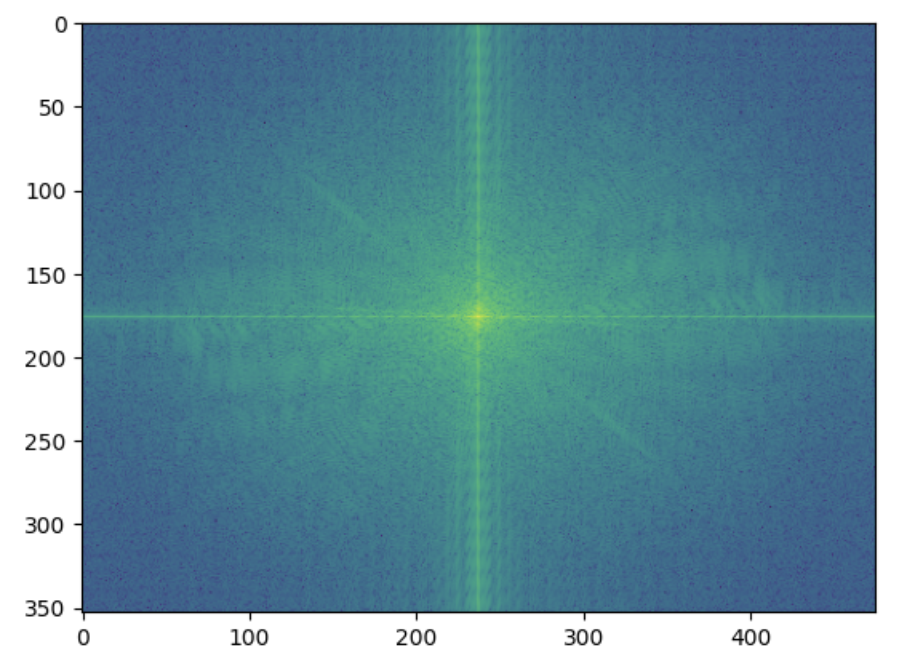
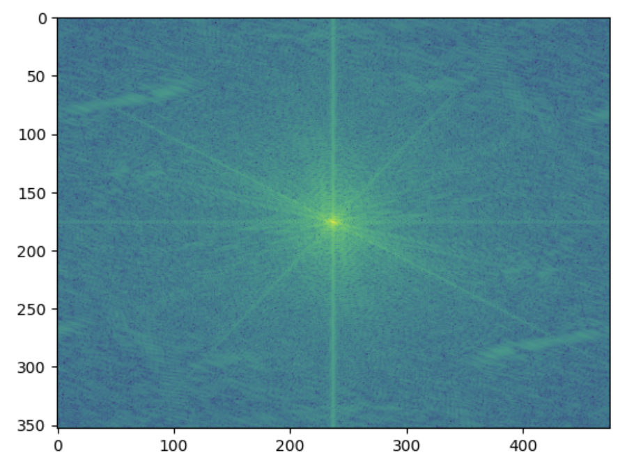
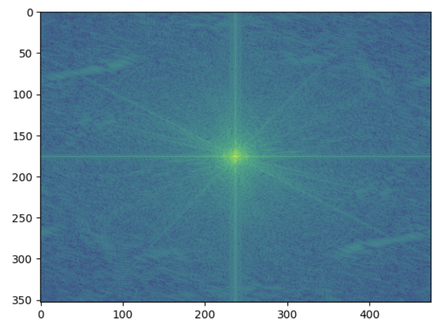
Gaussian and Laplacian Stacks
Recreated Outcomes of Gaussian & Laplacian Stacks Application to Oraple (std: 5, kernel size: 31, layers: 6)
Apple Half
Orange Half
Blended Oraple
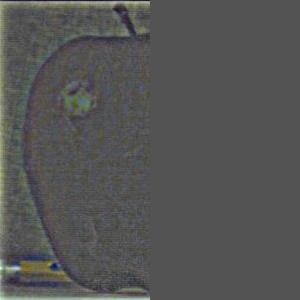
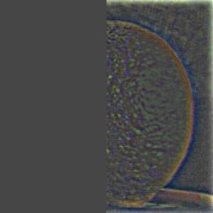
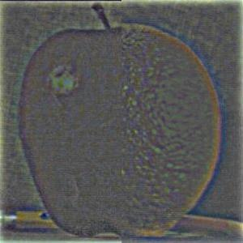
(a) Layer 0
(b) Layer 0
(c) Layer 0
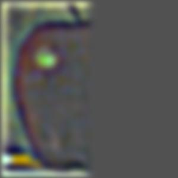
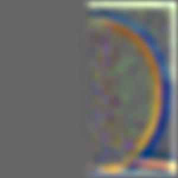
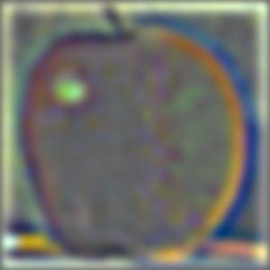
(d) Layer 2
(e) Layer 2
(f) Layer 2
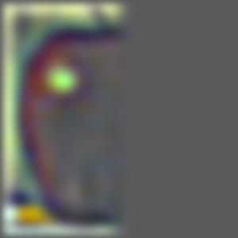
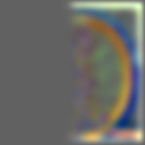
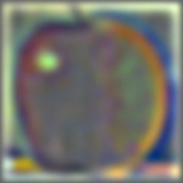
(g) Layer 4
(h) Layer 4
(i) Layer 4
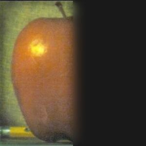
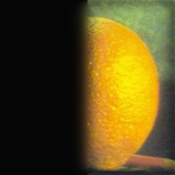
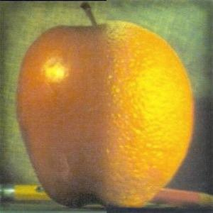
(j)
(k)
(l)
Multiresolution blending essentially divides the images into various frequencies and apply progressive masks with boundaries that become softer down the frequency stack. They are then summed together to create the blended images.
Multiresolution Blending
Custom Picks: The Pumpkimelon (std: 10, kernel size: 61, layers: 6)
Watermelon
Pumpkin
Pumpkimelon
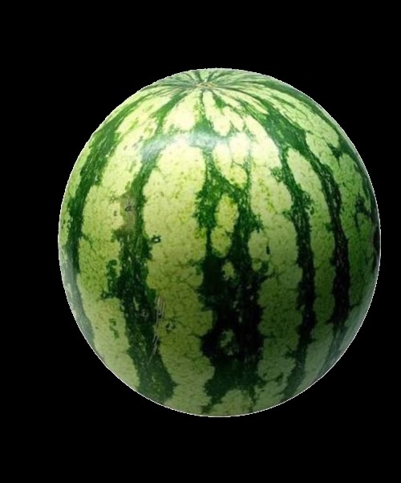
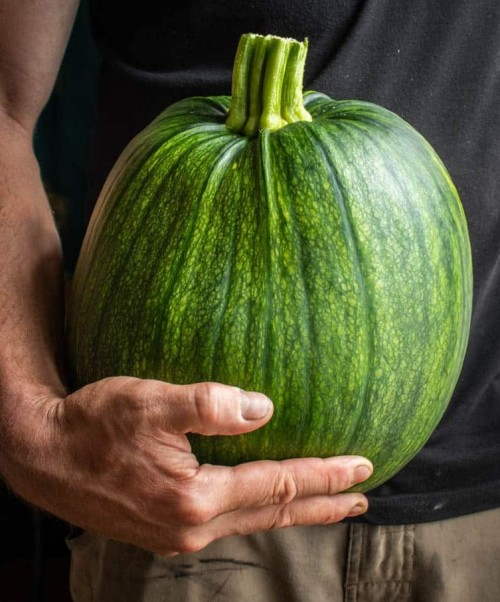
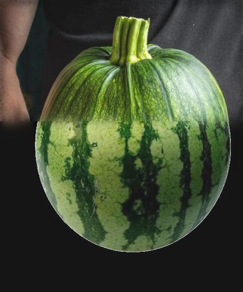
Custom Picks: Moonion (std: 10, kernel size: 61, layers: 6)
Minion
Moon
Moonion
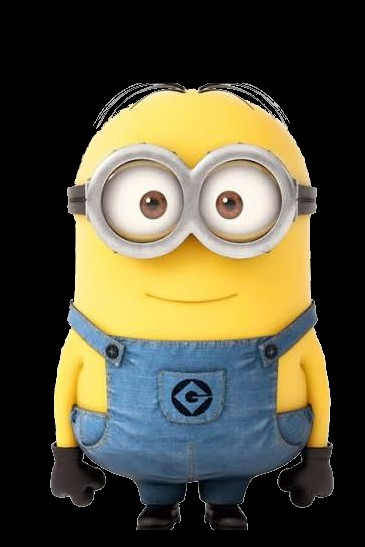
Minion Circle
Moon Ring
Blended Moonion
Layer 0
Layer 0
Layer 0
Layer 4
Layer 4
Layer 4